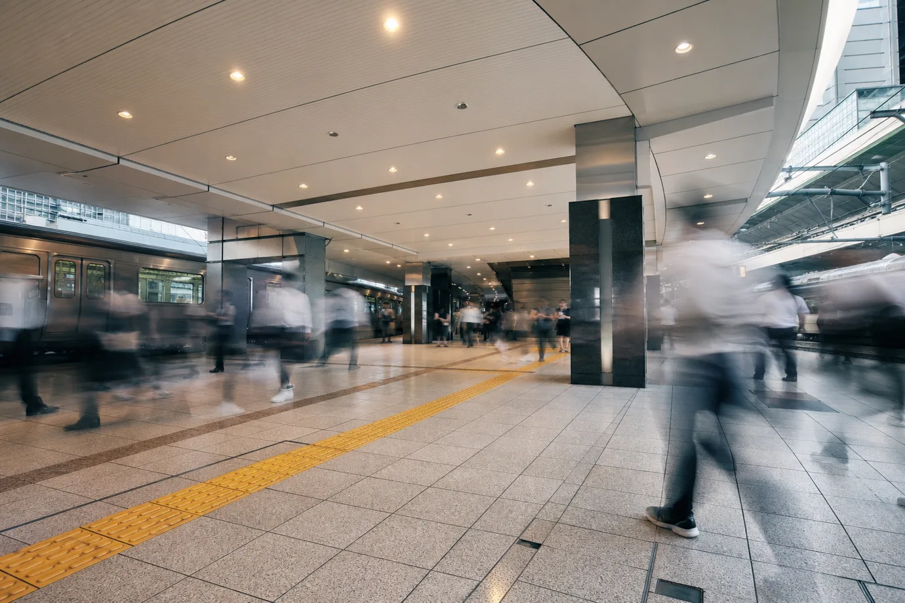

求める人物像Person
- 01
確かめることを、
面倒がらない人同じ手順を何度でも確かめられることが、この仕事のいちばんの才能です。
- 02
わからないと、
言える人知ったかぶりは事故のもと。聞くことをためらわない人を歓迎します。
- 03
仲間と組んで、
動ける人夜の現場は班で動きます。声をかけ合い、互いの安全を見合える人に来てほしいと考えています。
新卒採用 募集要項New Graduates
- 募集職種
- 施工管理・技術職（電車線／変電／信号通信／建築電気）
※配属は研修中の実習と面談をふまえて決定 - 対象
- 2027年3月に大学院・大学・高等専門学校・専門学校・高等学校を卒業予定の方（学部・学科は問いません）
- 採用予定人数
- 20〜25名
- 初任給
- 大学院・大学卒 月給242,000円
高専・専門卒 月給224,000円
高校卒 月給206,000円
※2026年4月入社の実績 - 諸手当
- 時間外手当（全額支給）、夜間作業手当、通勤手当、住宅手当、家族手当、資格手当、雪害待機手当
- 昇給・賞与
- 昇給 年1回（4月）／賞与 年2回（7月・12月）
- 勤務地
- 金沢本社・富山営業所・福井営業所・長野営業所のいずれか
※各拠点の工事現場へは会社の車両で移動します - 勤務時間
- 8:30〜17:15（休憩60分）
※夜間工事の日はシフト勤務。翌日は休息日 - 休日・休暇
- 年間休日121日、週休2日制（工事日程による振替あり）、夏季・年末年始・慶弔休暇、年次有給休暇
- 福利厚生
- 社会保険完備、退職金制度、独身寮、財形貯蓄、資格取得支援 ほか
キャリア採用 募集要項Career
- 募集職種
- 施工管理・技術職（電車線／変電／信号通信／建築電気）
- 応募資格
- 電気設備の工事・保守・設計のいずれかの経験がある方
※鉄道の経験は問いません。資格は入社後の取得でも構いません - 採用予定人数
- 各分野 若干名
- 給与
- 月給260,000円〜420,000円
※経験・資格・前職の給与をふまえて決定 - 諸手当
- 時間外手当（全額支給）、夜間作業手当、通勤手当、住宅手当、家族手当、資格手当、雪害待機手当
- 昇給・賞与
- 昇給 年1回（4月）／賞与 年2回（7月・12月）
- 試用期間
- 3か月（期間中の待遇に差はありません）
- 勤務地・勤務時間
- 新卒採用と同じ。転居を伴う転勤は、事前の面談で希望を確かめてから決めます
- 休日・休暇
- 年間休日121日、週休2日制（工事日程による振替あり）、夏季・年末年始・慶弔休暇、年次有給休暇（入社日に付与）
選考の流れFlow
- 01
エントリー
エントリーフォームから必要事項をお送りください。3営業日以内に採用担当からご連絡します。
- 02
説明会・職場見学
会社説明と研修棟の見学。オンラインでの参加もできます。キャリア採用はカジュアル面談に代えられます。
- 03
書類選考
履歴書をご提出いただきます。新卒採用では成績証明書もあわせてお送りください。
- 04
面接（2回）
一次面接は現場の課長、二次面接は役員が担当します。二次面接の日に適性検査を行います。
- 05
内定
エントリーから内定までは、おおむね1か月です。内定後に配属先の拠点を見学する機会を設けます。
よくある質問FAQ
電気を学んでいなくても応募できますか？
はい、できます。入社後3か月の研修で電気の基礎から学びます。社員の中にも、情報系や機械系、文系の学部から入社した人がいます。
入社前に取っておくべき資格はありますか？
必須の資格はありません。第二種電気工事士をお持ちの方は研修で役立ちますが、入社後に取得する社員がほとんどです。受験費用は会社が負担します。
夜間作業はどのくらいありますか？
分野や時期によって異なりますが、電車線・信号通信の担当で月に6〜8回ほどです。夜間作業の翌日は休息日になります。建築電気は昼間の作業も多くあります。
転勤はありますか？
拠点間の異動はありますが、転居を伴う異動は面談で本人の希望と家庭の事情を確かめたうえで決めています。
高い所での作業が不安です。
高所作業は安全帯と作業車を使い、研修棟で十分に練習してから現場に入ります。どうしても苦手な場合は、変電や建築電気など地上の作業が中心の分野もあります。
女性の技術者は働いていますか？
技術系の社員のうち女性は38名で、すべての分野で働いています。更衣室や休憩室は拠点ごとに男女別に設けています。
車の運転免許は必要ですか？
現場への移動に会社の車を使うため、入社までに普通自動車免許（AT限定可）の取得をお願いしています。